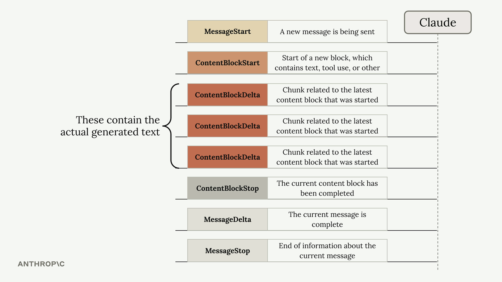
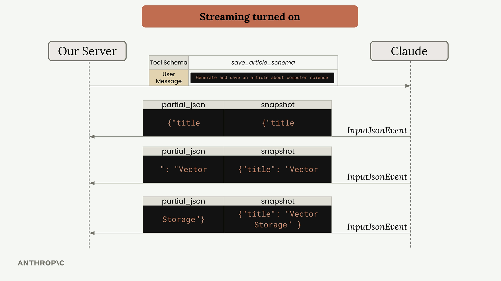
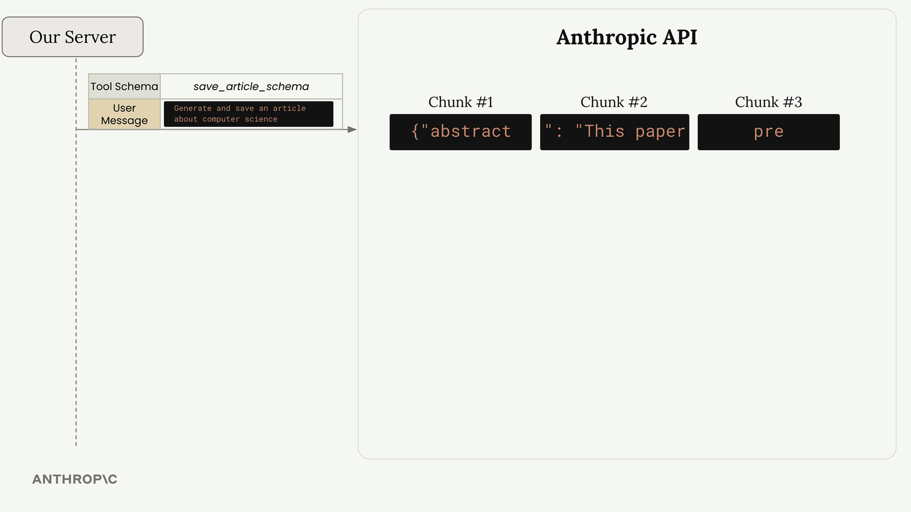
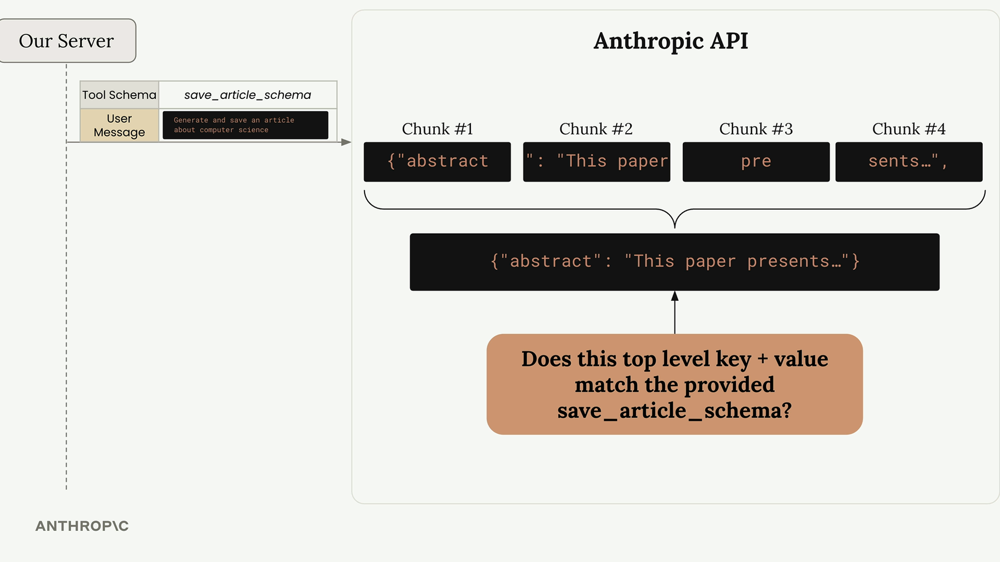
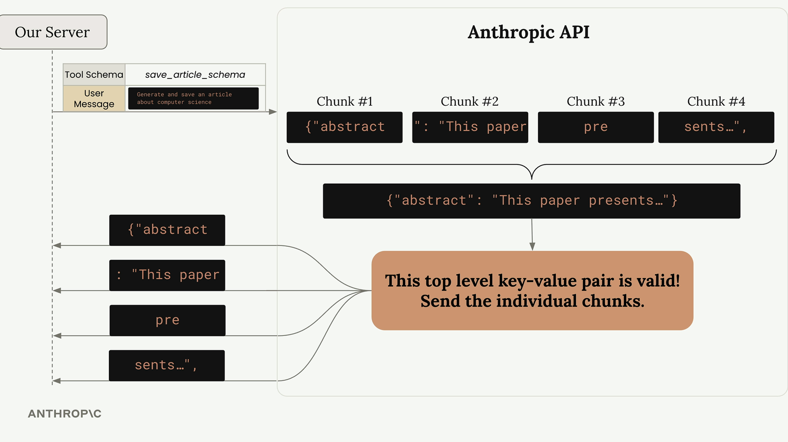
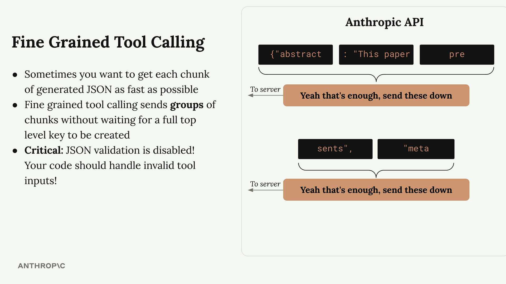

세밀한 도구 호출
Claude에서 도구 사용과 스트리밍을 결합하면, AI가 도구 인수를 생성하는 동안 실시간 업데이트를 받을 수 있습니다. 이를 통해 더 반응성 높은 사용자 경험을 만들 수 있지만, 내부적으로 어떻게 동작하는지 이해해야 할 중요한 세부 사항이 있습니다.
기본 도구 스트리밍
스트리밍이 활성화된 상태에서 Claude는 요청을 처리하는 동안 다양한 유형의 이벤트를 반환합니다. 일반 텍스트 생성을 위한 ContentBlockDelta 이벤트는 이미 익숙하실 것입니다. 도구 사용의 경우, InputJsonEvent라는 새로운 이벤트 유형도 처리해야 합니다.

각 InputJsonEvent에는 두 가지 핵심 속성이 포함되어 있습니다:
- partial_json - 도구 인수의 일부를 나타내는 JSON 청크
- snapshot - 지금까지 수신된 모든 청크로 구성된 누적 JSON
스트리밍 파이프라인에서 이러한 이벤트를 처리하는 방법은 다음과 같습니다:
for chunk in stream:
if chunk.type == "input_json":
# Process the partial JSON chunk
print(chunk.partial_json)
# Or use the complete snapshot so far
current_args = chunk.snapshot
JSON 유효성 검사 동작 방식
여기서 흥미로운 점이 있습니다. Anthropic API는 Claude가 생성하는 모든 청크를 즉시 전송하지 않습니다. 대신, 청크를 버퍼링하고 먼저 유효성을 검사합니다.

API는 무언가를 전송하기 전에 완전한 최상위 키-값 쌍이 완성될 때까지 기다립니다. 예를 들어, 도구가 다음 구조를 기대하는 경우:
{
"abstract": "This paper presents a novel...",
"meta": {
"word_count": 847,
"review": "This paper introduces QuanNet..."
}
}API는 다음과 같이 동작합니다:
-
abstract값 전체가 완성될 때까지 대기 - 해당 키-값 쌍을 스키마에 대해 유효성 검사
-
abstract에 대해 버퍼링된 모든 청크를 한꺼번에 전송 -
meta객체에 대해 동일한 과정 반복

이 유효성 검사 과정이 스트리밍이 활성화되어 있어도 지연 후 텍스트가 한꺼번에 쏟아지는 이유를 설명합니다. 청크는 완전하고 유효한 최상위 키-값 쌍이 준비될 때까지 보류됩니다.

세밀한 도구 호출
더 빠르고 세분화된 스트리밍이 필요한 경우 - 예를 들어 사용자에게 즉각적인 업데이트를 표시하거나 부분 결과를 빠르게 처리하기 시작하려는 경우 - 세밀한 도구 호출을 활성화할 수 있습니다.

세밀한 도구 호출은 한 가지 핵심 기능을 수행합니다: API 측의 JSON 유효성 검사를 비활성화합니다. 이는 다음을 의미합니다:
- Claude가 생성하는 즉시 청크를 받을 수 있음
- 최상위 키 사이의 버퍼링 지연 없음
- 보다 전통적인 스트리밍 동작
- 중요: JSON 유효성 검사가 비활성화됨 - 코드에서 유효하지 않은 JSON을 처리해야 함
API 호출에 fine_grained=True를 추가하여 활성화합니다:
run_conversation(
messages,
tools=[save_article_schema],
fine_grained=True
)
세밀한 도구 호출을 사용하면 전체 meta 객체가 완성될 때까지 기다리지 않고 스트림 훨씬 앞부분에서 word_count 값을 받을 수 있습니다.
유효하지 않은 JSON 처리
세밀한 도구 호출을 사용할 때 Claude는 올바른 숫자 대신 "word_count": undefined와 같이 유효하지 않은 JSON을 생성할 수 있습니다. 애플리케이션은 이러한 경우를 적절히 처리해야 합니다:
try:
parsed_args = json.loads(chunk.snapshot)
except json.JSONDecodeError:
# Handle invalid JSON appropriately
print("Received invalid JSON, continuing...")세밀한 도구 호출 없이는 API의 유효성 검사가 이 오류를 감지하고 문제가 있는 값을 문자열로 감싸는데, 이는 예상하는 스키마와 일치하지 않을 수 있습니다.
세밀한 도구 호출을 사용해야 하는 경우
다음과 같은 경우 세밀한 도구 호출 활성화를 고려하세요:
- 도구 인수 생성 과정을 사용자에게 실시간으로 보여줘야 할 때
- 부분적인 도구 결과를 가능한 빨리 처리하기 시작하고 싶을 때
- 버퍼링 지연이 사용자 경험에 부정적인 영향을 미칠 때
- 강력한 JSON 오류 처리를 구현할 준비가 되어 있을 때
대부분의 애플리케이션에서는 유효성 검사가 포함된 기본 동작으로도 충분합니다. 하지만 추가적인 응답성이 필요할 때, 세밀한 도구 호출은 Claude가 생성하는 속도만큼 빠르게 청크를 받을 수 있는 제어권을 제공합니다.